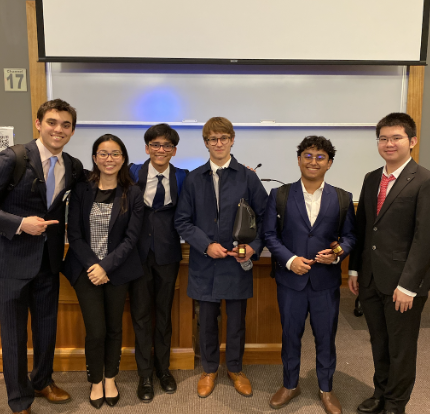

I have played JV tennis for Milton since my freshman year.

I played the alto sax for the jazz ensemble during my freshman year.
I am part of the Speech and Debate Team. This photo shows my partner, Alex Zhang, and I competing in our first Public Forum debate tournament which was online.
I do competitions with the Economics Club. In this photo, I am receiving an award from Mr. Bland in recognition of my 4th Place award at the National Economics Challenge.

I love doing Model UN conferences during the weekends. This photo shows me winning "Best Delegate" or 1st Place at the Suffolk University GBMUN conference that took place in September 2023.
I am one of the co-heads of the Muslim Students Association (MSA). I joined as a freshman during Ramandan and loved the community.
I love writing for publications. I started out writing for the Milton Paper during my freshman year. In this picture, I won the Persky award for an article I wrote about the Milton soccer team.
One of my passions is public policy, so I joined the Public Issues Board my freshman year and have helped organize voting drives and host speakers on Seminar day.
I love to conduct research projects outside of my regular coursework and participate in science fairs. In this photo, I competed in the MA state science fair at MIT in 2023.